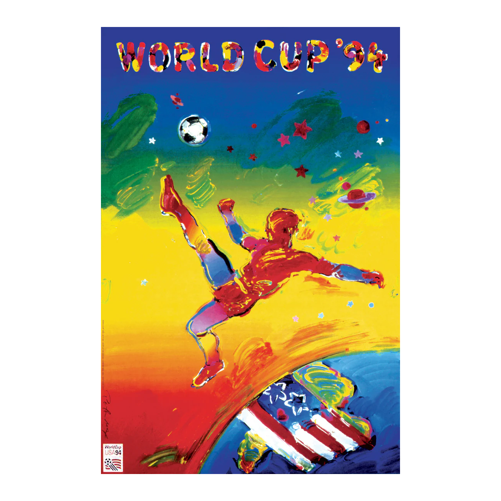
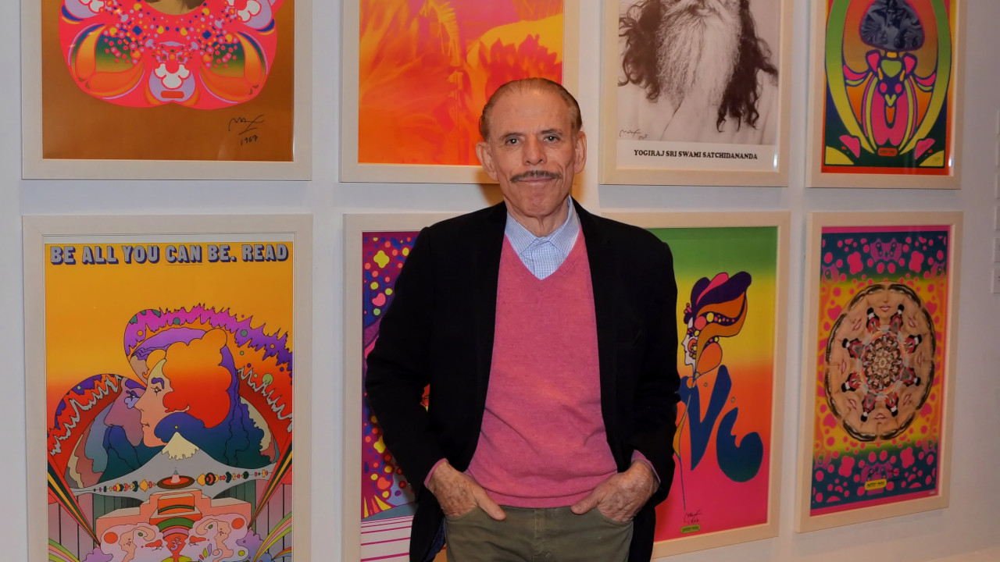

Official Poster
The official poster for the 1994 FIFA World Cup was created by the renowned German-born American Pop artist Peter Max.
The poster features Max's signature vibrant, psychedelic style with bold, kaleidoscopic colors.
It depicts a floating footballer kicking a ball into orbit, intended to represent the universal appeal and "unifying time" of the sport.
The design includes a U.S. flag with a heart, which the artist intended as a tribute to a "country with a big heart".
Upon its release, the artwork was seen by an estimated 2 billion people worldwide on television.

Peter Max
Peter Max (born Peter Max Finkelstein, October 19, 1937) is a German-American artist known for using bright colors in his work. Works by Max are associated with the visual arts and culture of the 1960s, particularly psychedelic art and pop art.
Max has been the official artist for many major events, including the 1994 World Cup, the Grammy Awards, the Rock and Roll Hall of Fame, the Super Bowl and others. In 2000, Max designed the paint scheme Dale Earnhardt drove at the Winston all-star race, deviating from Earnhardt's trademark black car. He was also the Official Artist of the 2000 World Series, the "Subway Series" between the New York Yankees and the New York Mets.